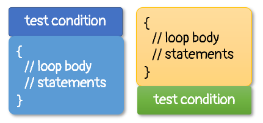

Guarded & Unguarded Loops
C++ has four loops:
while (condition) { statements; }
do { statements; } while (condition);
for (initializer; condition; update) { statements; }
for (element : collection) { statements; }Each loop is designed for a particular purpose, and each has a place where it is most effective. One difference is where the test takes place.


The do-while loop, illustrated on the right loop, tests its condition after it has performed the actions in the loop body at least once. This "test at the bottom" loop is also called an unguarded loop, because it "leaps before it looks".
The others three loop types check the test condtion before performing the actions in the loop body. These are called guarded loops, because when the test condition is false, then the actions inside the loop body are never performed at all.
 This course content is offered under a
CC
Attribution Non-Commercial license. Content in this course
can be considered under this license unless otherwise noted.
This course content is offered under a
CC
Attribution Non-Commercial license. Content in this course
can be considered under this license unless otherwise noted.